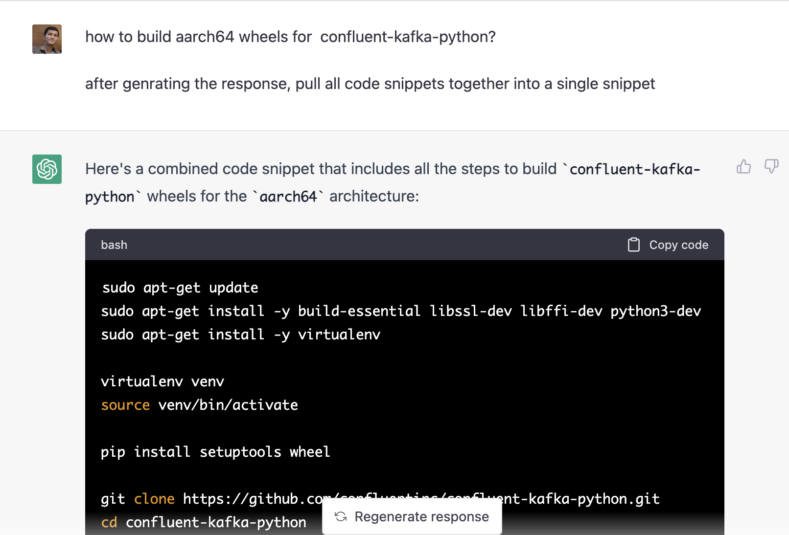

Reducing System Load With ChatGPT
Problem Statement
I am using M1 Macbook Air for Python development purposes. Since M1 uses ARM architecture, many Python packages don't have wheels for ARM64/aarch64. confluent-kafka-python is one of them.
I had to run AMD64 docker container to use confluent-kafka-python. Since it is a cross-architecture container, its CPU usage is too high and performance was too slow.
Solution
To reduce system load, I decided to build aarch64 wheels for confluent-kafka-python. I looked at open issues on GitHub and asked maintainers how to build aarch64 wheels. There was no response1 from them.
As a workaround, I asked ChatGPT2 on how to build confluent-kafka-python aarch64 wheels in a docker container.

This initial suggestion didn't work as confluent-kafka-python depends on librdkafka which is a C library. I had to build librdkafka from source for aarch64 and then build confluent-kafka-python from source.
To build librdkafka from the source, I again asked ChatGPT. After making minor changes to the snippet suggested by ChatGPT, I was able to build librdkafka from the source for aarch64.
Here is the final snippet:
FROM ubuntu:22.04 ARG DEBIAN_FRONTEND=noninteractive RUN apt update && apt install -y \ wget git curl g++ make postgresql-client \ nano less shared-mime-info openjdk-17-jre-headless \ libpq-dev vim tzdata python3 python3-dev RUN apt install -y python3-pip RUN python3 -m pip install setuptools WORKDIR / RUN git clone https://github.com/confluentinc/confluent-kafka-python WORKDIR confluent-kafka-python COPY . /app WORKDIR /app RUN ./configure --arch=aarch64 --prefix=/usr RUN make RUN make install WORKDIR /confluent-kafka-python RUN python3 setup.py install
Conclusion
By running native containers, I was able to reduce the system load by ~50%. With ChatGPT, it is easy to build/tweak programs in languages & environments that we are not familiar with.

Chillar Anand
A blog about python, careers & life.
To contact me, send a message here.